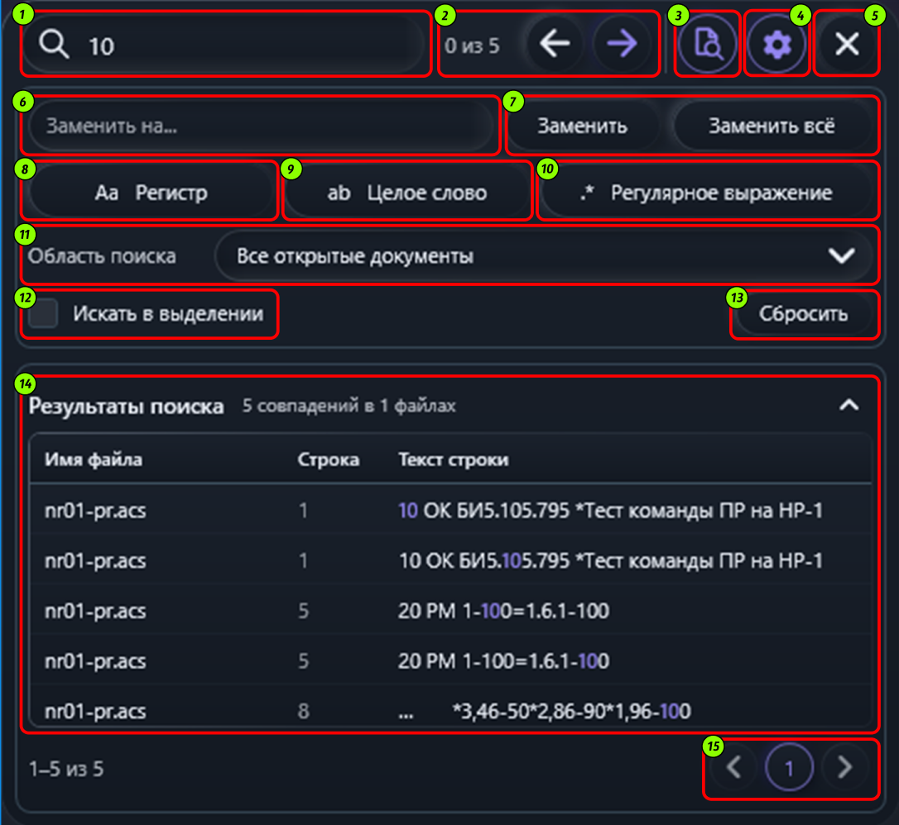

Поиск и замена
Панель поиска открывается сочетанием Ctrl + F или командой Файл → Поиск. Она закреплена под верхней панелью окна. Если перед открытием панели в редакторе было выделено обычное текстовое выделение, его текст подставляется в строку поиска.

Элементы панели
| № | Элемент | Назначение |
|---|---|---|
| 1 | Строка поиска | Введите текст или регулярное выражение. При открытии из редактора сюда подставляется текст обычного выделения. |
| 2 | Счётчик и переходы | Показывают позицию текущего совпадения и общее число результатов; стрелки переходят к предыдущему или следующему совпадению. |
| 3 | Найти все | Формирует список всех совпадений в выбранной области поиска. |
| 4 | Настройки | Открывает или скрывает параметры поиска и строку замены. |
| 5 | Закрыть | Закрывает панель. То же действие выполняет клавиша Esc. |
| 6 | Поле замены | Введите текст, на который нужно заменить найденный фрагмент. Для регулярных выражений можно использовать группы, например $1. |
| 7 | Кнопки замены | «Заменить» меняет текущее совпадение; «Заменить всё» применяет замену ко всем совпадениям выбранной области. |
| 8 | Учитывать регистр | Включает различение прописных и строчных букв. |
| 9 | Целое слово | Ищет совпадения только на границах слов. |
| 10 | Регулярное выражение | Включает поиск по регулярному выражению вместо буквального текста. |
| 11 | Область поиска | Выберите текущий документ, все открытые документы или область, предоставленную активным компонентом. |
| 12 | Искать в выделении | Ограничивает поиск обычным текстовым выделением, сделанным до открытия панели. |
| 13 | Сбросить | Очищает поле замены и дополнительные параметры поиска. |
| 14 | Результаты поиска | Заголовок показывает число совпадений и документов, а таблица — файл, строку и текст. Стрелка сворачивает список; выбор строки переносит к совпадению. |
| 15 | Страницы результатов | Кнопки переключают страницы списка результатов. |
Как выполняется поиск
Введите запрос и запустите поиск клавишей Enter или кнопкой перехода. Поиск не запускается автоматически при каждом изменении запроса: при изменении текста или параметров текущие результаты и подсветка сбрасываются. Направление задают кнопки перехода, F3 (следующее совпадение) и Shift + F3 (предыдущее). Переход циклически продолжается между совпадениями; для области «Все открытые документы» он также переходит между документами.
Параметры запроса
| Параметр | Поведение |
|---|---|
| Текст поиска | По умолчанию ищется буквальный текст: специальные символы трактуются как обычные. |
| Регистр | По умолчанию регистр не учитывается. Включите параметр, чтобы различать прописные и строчные буквы. |
| Целое слово | Ограничивает совпадение границами слова. Например, запрос «ток» не найдёт часть слова «поток». |
| Регулярное выражение | Включает поиск по шаблону. При замене можно использовать подстановки захваченных групп. Полное описание синтаксиса и примеры приведены ниже. Некорректный шаблон показывает предупреждение; поиск, выполняющийся дольше 500 мс, прекращается. |
| Искать в выделении | Ограничивает поиск текстом, выделенным в редакторе до открытия панели. Параметр доступен для обычного, не прямоугольного выделения. |
Полное описание регулярных выражений
Когда параметр выключен, введённый текст ищется буквально. Когда он включён, специальные
символы образуют шаблон. По умолчанию регистр не учитывается; параметр «Регистр» включает
его учёт. В режиме регулярного выражения символы ^ и $ обозначают
начало и конец каждой строки. Точка . соответствует любому символу, кроме
перевода строки; режим (?s) также включает переводы строк.
| Возможность | Синтаксис | Пример и назначение |
|---|---|---|
| Буквальный символ | abc | Ищет последовательность abc. |
| Экранирование | \., \*, \\ | Ищет точку, звёздочку или обратную косую черту как обычные символы. |
| Любой символ | . | Соответствует одному символу, кроме перевода строки. |
| Классы символов | [abc], [a-z], [^0-9] | Один символ из перечисления или диапазона; ^ в начале класса исключает перечисленные символы. |
| Краткие классы | \d, \w, \s | Цифра, символ слова или пробельный символ. Варианты в верхнем регистре (\D, \W, \S) задают дополнение соответствующего класса. |
| Категории Unicode | \p{L}, \p{Nd}, \P{L} | Буква, десятичная цифра или символ вне указанной категории Unicode. |
| Границы и позиции | \b, ^, $, \A, \z | Граница слова, начало строки, конец строки, начало всего текста и конец всего текста соответственно. |
| Повторение | *, +, ?, {n}, {n,}, {n,m} | Ноль или больше, один или больше, необязательный фрагмент, ровно n, не менее n или от n до m повторений. |
| Нежадный повтор | *?, +?, {n,m}? | Выбирает минимально необходимое число повторений. Например, <.*?> находит отдельные фрагменты в угловых скобках. |
| Альтернатива | кошка|собака | Находит один из вариантов. Скобки задают область действия: (кошка|собака)\s+дом. |
| Захватывающая группа | (...), (?<имя>...) | Группирует часть шаблона и сохраняет совпавший текст по номеру или имени группы. |
| Группа без захвата | (?:...) | Группирует шаблон, не создавая отдельную группу для подстановки. |
| Обратная ссылка | \1, \k<имя> | Повторно находит текст, ранее совпавший с указанной группой. Например, (\w+)\s+\1 находит повтор одного слова. |
| Просмотр вперёд | (?=...), (?!...) | Проверяет, что после позиции следует указанный шаблон, либо что он не следует; проверяемый текст не включается в совпадение. |
| Просмотр назад | (?<=...), (?<!...) | Проверяет, что перед позицией находится указанный шаблон, либо что его там нет; проверяемый текст не включается в совпадение. |
| Атомарная группа | (?>...) | Фиксирует первое найденное совпадение внутри группы и запрещает движку возвращаться к альтернативам этой группы. |
| Условная группа | (?(имя)да|нет) | Выбирает вариант в зависимости от того, была ли ранее успешно захвачена группа с указанным именем или номером. |
| Балансирующая группа | (?<новая-старая>...), (?<-имя>...) | Добавляет захват в именованную группу или снимает последний захват из неё; позволяет проверять вложенные парные конструкции. |
| Параметры внутри шаблона | (?i), (?m), (?s), (?x), (?i:...) | Включает учёт регистра, многострочный режим, соответствие точки переводам строк, свободный формат с пробелами и комментариями или задаёт параметр только для части шаблона. |
Подстановки в строке замены
Эти обозначения применяются в поле «Заменить на» при включённом режиме регулярных выражений.
| Подстановка | Что вставляет |
|---|---|
$1, ${имя} | Текст первой или именованной захватывающей группы. |
$$ | Знак доллара. |
$& | Текст всего найденного совпадения. |
$`, $' | Текст до совпадения или после него в исходной строке. |
$+ | Текст последней успешно захваченной группы. |
$_ | Весь исходный текст документа. |
Например, шаблон (?<имя>\w+)\s+(\d+) находит слово и число;
строка замены ${имя} — $2 переставляет их в заданном виде.
Параметр «Целое слово» дополнительно требует границу слова вокруг всего шаблона.
Область поиска
В редакторе доступны области Текущий документ и Все открытые документы. Если панель открыта из другого компонента, список показывает области, которые этот компонент предоставляет поиску. Отдельного выбора произвольного файла в панели нет.
Результаты
При переходе панель показывает номер текущего совпадения и общее количество, например «2 из 8». Найденный фрагмент подсвечивается в документе, а активное совпадение выделяется отдельно: текст активного совпадения отображается увеличенным полужирным шрифтом. Кнопка Найти все открывает список совпадений с документом, номером строки и фрагментом контекста. В списке отображаются пять строк на странице; кнопки страниц переключают остальные результаты. Щелчок по строке переносит редактор к найденному фрагменту. Если содержимое документа изменилось после построения списка, выполните поиск заново.
Замена
Нажмите кнопку настроек, чтобы открыть поле «Заменить на» и действия замены. Заменить изменяет текущее совпадение, а Заменить всё применяет замену ко всем совпадениям в выбранной области. Для регулярных выражений в поле замены используются группы из таблицы выше. Замена доступна только там, где целевой документ разрешает редактирование.
В текстовом редакторе заменённые фрагменты временно отмечаются полупрозрачным зелёным фоном, увеличенным полужирным шрифтом и рамкой. Наведите указатель на отметку, чтобы подтвердить замену или отменить её. Отмена отдельной замены возвращает исходный текст, если фрагмент после замены не менялся. При закрытии панели отметки проверки замен очищаются.
Клавиши и действия
| Клавиши | Действие |
|---|---|
| Ctrl + F | Открыть панель или вернуть фокус в строку поиска. |
| Enter / Shift + Enter | Перейти к следующему / предыдущему совпадению. |
| F3 / Shift + F3 | Перейти к следующему / предыдущему совпадению. |
| Alt + R | Заменить текущее совпадение. |
| Alt + A | Заменить все совпадения. |
| Esc | Закрыть панель поиска. |
Параметр «Сбросить» очищает замену и дополнительные параметры поиска.